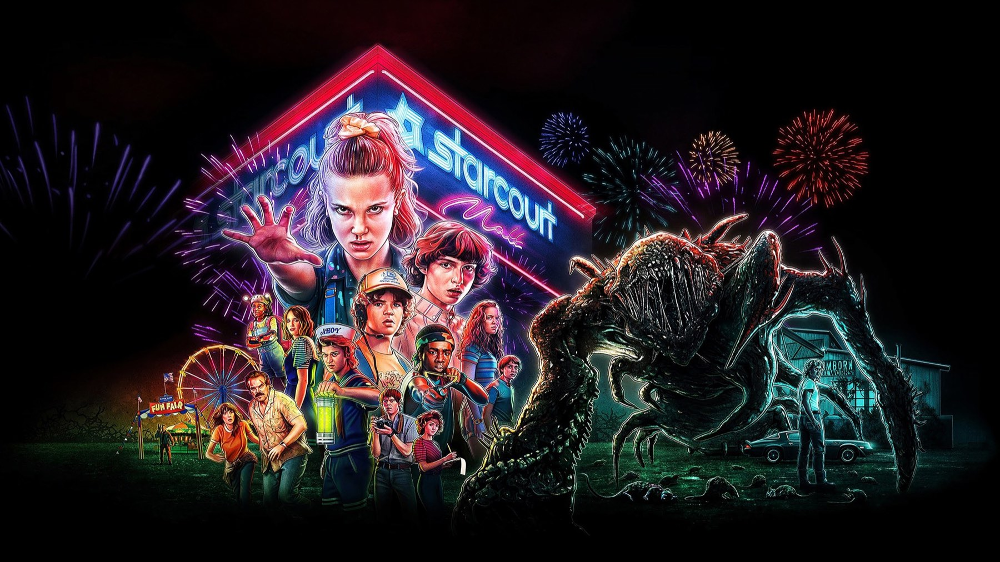

Stranger Things – Stagione 3
Hawkins nell'estate del 1985, tra le vetrine al neon di Starcourt e i russi in cantina: un luna park riuscito, ma sbilanciato
Stranger Things 3 è il capitolo più divertente della serie e, proprio per questo, il primo che smette di fare paura. I Duffer scambiano il bosco buio del 1983 con le vetrine al neon di un centro commerciale, e il cambio funziona finché si tratta di ridere e di far crescere i personaggi. Quando però arriva il momento di spaventare, il nemico che hanno scelto non regge: i russi. Per noi è una stagione da vedere per Robin e da perdonare per tutto il resto.
Il racconto si chiude sulla festa del 4 luglio, con le bancarelle, la ruota panoramica e i fuochi d'artificio, ed è lì che si capisce il progetto. Perché questa volta l'America degli anni Ottanta non è lo sfondo della storia, ma il suo argomento: la festa di paese sopra, e sotto il pavimento il nemico della Guerra fredda. Netflix, del resto, pubblicò gli otto episodi proprio in quella data, il 4 luglio 2019.
Di cosa parla la terza stagione di Stranger Things?
Hawkins, Indiana, estate 1985. In città ha aperto Starcourt, un centro commerciale scintillante che sta svuotando i negozi della via principale, quindi tutti passano le giornate lì dentro. Mike e Undici stanno insieme, con grande fastidio di Hopper (David Harbour). Steve Harrington (Joe Keery), invece, indossa una divisa da marinaio e serve gelati da Scoops Ahoy, accanto a una collega che lo prende in giro a ogni turno: Robin Buckley (Maya Hawke).
Dustin, con la sua radio, intercetta un messaggio in russo, e sarà proprio Robin a decifrarlo. Intanto Billy (Dacre Montgomery), il fratellastro di Max, viene buttato fuori strada da una creatura invisibile vicino a una vecchia acciaieria, e da quella sera non è più lo stesso. Da qui la trama si divide fra più gruppi, perché accanto ai ragazzi e agli adulti nasce una coppia nuova, quella dei due colleghi della gelateria, che si porta dietro Dustin e la piccola Erica Sinclair (Priah Ferguson), la sorella di Lucas, entrata adesso nel cast principale.

La scena che vale la stagione
Non è uno scontro con il mostro, ed è proprio questo il punto. Nel settimo episodio, «Capitolo sette: Il morso», scritto e diretto dai fratelli Duffer, i due ragazzi della gelateria sono appena usciti dal laboratorio segreto sotto Starcourt, dove i russi li hanno interrogati dopo averli drogati. Dustin ed Erica li nascondono nel cinema del centro commerciale, quindi i due, ancora mezzi ridenti per la droga, si mettono a parlare. Allora lui, con la sincerità di chi non controlla più quello che dice, le confessa che gli piace stare con lei. Robin lo lascia finire, poi gli spiega perché a scuola lo detestava: non era gelosa di lui, ma era innamorata di Tammy, una compagna che aveva occhi solo per Steve.
La scena funziona perché la serie si ferma. I Duffer interrompono l'azione che corre altrove nella puntata e lasciano due ragazzi a parlare per circa sette minuti. Steve accoglie la confessione senza drammi, e quella reazione racconta il personaggio meglio di qualsiasi mazza chiodata, perché il ragazzo popolare del 2016 adesso sa ascoltare. E c'è un retroscena che fa rivedere tutto con altri occhi: Robin era nata come la nuova fidanzata di Steve. L'idea cambiò con le riprese già cominciate, tra il quarto e il quinto episodio, e Maya Hawke lo raccontò a Seventeen il 31 luglio 2019: a riguardare le prime puntate, disse, quella scelta sembra «la decisione più ovvia del mondo». Ha ragione, e lo si vede proprio nei battibecchi da Scoops Ahoy, che non erano mai stati un corteggiamento.
La nostra sintesiIl momento più bello di Stranger Things 3 arriva quando i mostri tacciono e due ragazzi storditi si dicono, finalmente, come stanno le cose.
Cosa funziona
Partiamo quindi da Starcourt: il centro commerciale è un'idea felice, perché è il simbolo perfetto degli anni Ottanta che la serie ama e insieme un luogo che divora la città, mentre le vetrine della via principale chiudono una dopo l'altra. Per girarlo la produzione usò un centro commerciale vero, il Gwinnett Place Mall vicino a Duluth, in Georgia, ed è per questo che Starcourt non ha mai l'aria del set di cartapesta.
Funziona anche Billy, anzi è la sorpresa più grande. Un anno prima era il fratellastro violento e senza sfumature; qui invece diventa il primo corpo di cui il Mind Flayer, il mostro del Sottosopra, prende possesso. Nel quarto capitolo, diretto da Shawn Levy, i ragazzi provano a stanarlo chiudendolo in una sauna rovente, e Dacre Montgomery passa dal sorriso del bagnino al terrore di chi sente che qualcosa gli sta mangiando la testa: per la prima volta Billy fa paura e pena insieme. Poi c'è la leggerezza, che qui ha un sapore tutto suo. Nel finale, per ottenere un codice decisivo, Dustin deve cantare via radio a Suzie la sigla della Storia infinita, nel mezzo della battaglia.
Cosa non funziona
Il problema ha un accento preciso: i russi. Hanno costruito un laboratorio segreto sotto il centro commerciale per riaprire il varco verso il Sottosopra, e il sicario Grigori insegue Hopper e Joyce per tutta la stagione con la faccia di pietra del cattivo da videocassetta. Sembrano usciti da Alba rossa, il film di John Milius del 1984 in cui un gruppo di ragazzi americani fa la guerriglia contro i soldati sovietici. Nel 1983, invece, il nemico erano gli adulti del laboratorio di Hawkins, cioè il governo di casa propria, quindi la paura era vera. Qui diventa un cliché da Guerra fredda, divertente da guardare ma senza nessun peso, e infatti nessuno dei russi ha un volto o un motivo, tranne lo scienziato Alexei (Alec Utgoff), che piace proprio perché smette presto di sembrare un cattivo.
Anche Hopper ne esce male. Un anno prima era un padre burbero che imparava a esserlo; qui per metà del tempo urla, e la scena con il sindaco Larry Kline (Cary Elwes), che lui e Joyce costringono a confessare che Starcourt è una copertura dei russi, ha i toni di una commedia degli equivoci più che di un'indagine. E intanto il mostro, fatto di carne e di cittadini assorbiti, è più grande di sempre, ma spaventa meno di un'ombra in un campo di zucche.
La terza stagione rispetto alle altre
Il confronto più utile è con l'esordio. Nel 1983 il Sottosopra entrava in casa, attraverso le pareti e le lucine di Natale di Joyce; nel 1985 sale da un laboratorio scavato sotto i negozi di un centro commerciale. La paura passa quindi dalla famiglia allo spettacolo, perciò la serie diventa più grande ma meno intima. La critica se ne accorse: l'89% di recensioni positive su Rotten Tomatoes e 72 su 100 su Metacritic, contro il 94% e il 78 della seconda annata, e 8 candidature agli Emmy invece di 12, con la vittoria per il montaggio sonoro. Il pubblico, al contrario, non ebbe dubbi, perché in quattro giorni oltre 40,7 milioni di account videro almeno il 70% di un episodio. Non a caso il quarto ciclo, nel 2022, tornerà al buio e all'orrore vero, come se i Duffer ne avessero sentito la mancanza.
Eppure senza questi otto episodi la serie sarebbe più povera. Qui nasce Robin, e qui Billy smette di essere una figurina. Perciò è il capitolo che si riguarda volentieri, anche se non è quello che si ricorda per primo.
A chi la consigliamo, e a chi no
La consigliamo a chi ama la serie per i suoi personaggi più che per il mistero, e a chi cerca un racconto da divorare in pochi giorni, con il ritmo di un film d'avventura degli anni Ottanta. Ve la sconsigliamo, invece, se vi aveva conquistato l'inquietudine del primo anno, perché qui le luci al neon la coprono quasi del tutto. Attenzione ai più piccoli: le scene con i corpi che si sciolgono per formare il mostro sono tra le più crude della serie. L'intera serie è su Netflix.
La terza stagione di Stranger Things è un luna park ben costruito, con la sorpresa di Robin e un Billy che finalmente fa pena oltre che paura. Ma i russi di cartone e un Hopper ridotto a macchietta le tolgono il buio. Si vede con piacere e si dimentica prima delle altre.
Domande frequenti
Quanti episodi ha la terza stagione di Stranger Things?
Otto episodi, pubblicati tutti insieme su Netflix il 4 luglio 2019. In italiano vanno da «Capitolo uno: Suzie, mi ricevi?» a «Capitolo otto: La battaglia di Starcourt».
In che anno è ambientato Stranger Things 3?
Nell'estate del 1985, fino alla festa del 4 luglio, con il nuovo centro commerciale Starcourt al centro della vita di Hawkins.
Dove vedere la terza stagione di Stranger Things?
L'intera serie, dal 2016 al finale del 2025, è disponibile in abbonamento su Netflix.
Fonti consultate (8)
- Wikipedia – Stranger Things season 3
- Wikipedia – Episodi di Stranger Things (terza stagione)
- Wikipedia – Chapter Seven: The Bite
- Wikipedia – Robin Buckley (con l'intervista a Maya Hawke di Seventeen, 31 luglio 2019)
- Wikiquote – Stranger Things, terza stagione
- Wikipedia – Stranger Things season 2
- Wikipedia – Alba rossa (film 1984)
- TMDB – scheda e dove vederlo in Italia